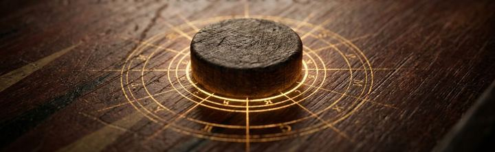
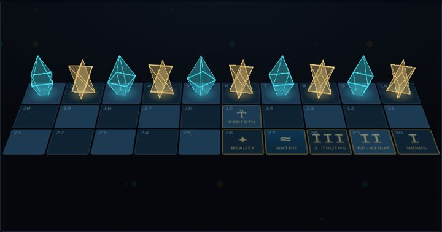
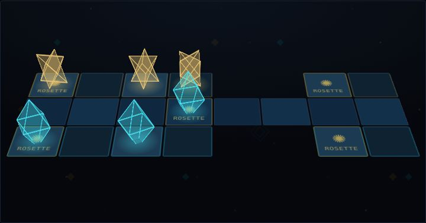
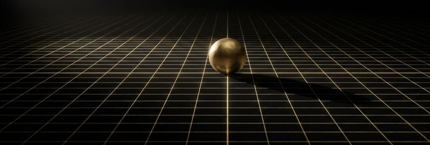

Games
Ophanim Lithic Chess
Pure strategyChess with sacred-geometry stones, 3D and 2D, a computer opponent, famous games and learner tools.
Play →
Ophanim Lithic Backgammon
Strategy and luckBackgammon and its regional variants, with a doubling-cube lab and the objective/subjective formula.
Play →
Ophanim Lithic Senet
Luck with some strategyThe Egyptian game of passing, from about 3000 BCE. Throwing sticks, a winding 30-square path and the journey through the underworld squares.
Play →
Ophanim Lithic Royal Game of Ur
Strategy and luckThe Sumerian race game from about 2600 BCE, found in the royal graves of Ur. Pyramid dice, rosettes and captures along a shared lane.
Play →
Ophanim Lithic Petteia
Pure strategyThe ancient Greek game of the city, from about 450 BCE. Sixteen “dogs” each on an 8×8 board, captured by enclosing them. A reconstruction, since the original rules are lost.
Play →Ophanim Lithic Tafl
Pure strategyThe Norse game of the king’s table, from about 400 CE. A king and his guard against twice as many attackers, on 7×7, 9×9 or 11×11 boards. A reconstruction, since no original rulebook survives.
Play →